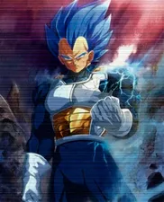
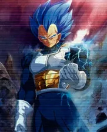

Dragon Ball
Goku
Vegeta
Vegetta es muy orgulloso y me gusta mucho por que es como yo
Bills/Whis
Me gusta mucho el personaje de bills y whis por que son unos de los personajes mas fuerte de dragon ball

Me gusta mucho ir al gym y el esfuerzo fisico.
Goku
Vegetta es muy orgulloso y me gusta mucho por que es como yo
Me gusta mucho el personaje de bills y whis por que son unos de los personajes mas fuerte de dragon ball
Me gusta el gym por que quisiera algun dia competir y ser una mejor version de mi mismo cada dia, aparte por que me gusta mucho el esfuerzo fisico por que me desestreza.